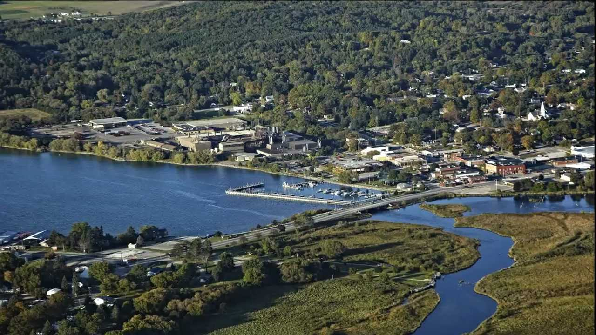

My name is Ryan Schroeder and I am a senior studying Experience Architecture. Experience Architecture is a very new, broad major here at MSU with the first graduating class graduating just last May. Experience Architecture focuses on the user more than other typical majors such as computer science. User Experience is a growing field as users pay more and more attention to their overal experience with a product or company.
I grew up in a small town called East Jordan, Michigan which is about an hour south of the Mackinac Bridge and about an hour north of Traverse City. It's a very small town with about 2,300 people in it but doubles in the summer time as we are a huge tourist destination. Though it is very small, the cool thing about my town is we are home to the headquarters of the East Jordan Iron Works.The East Jordan Iron Works is an international company creating manhole covers for cities across the world. No matter where I go, I will almost always have a little piece of home with me as just about anywhere in the country, I can look down at the nearest manhole cover and see either 'Made in East Jordan, Michigan' or something similar.
Here at MSU I work for SNworks which is a sub company of the State News. We create websites for student publications across the country. I am a sort of jack of all trades there but my official title is project manager. I have managed the creation of The Daily Cardinal - University of Wisconsin - Madison's student publication, The Pendulum - Elon University's student publication and several others. I have been with the company for almost 2 years now and have gained a tremendous amount of experience in project management, web development, user research and web design.
In addition to SNworks, I also have a job with Quicken Loans doing user experience/web development work for one of their internal products. I had the incredible opportunity to intern for Quicken over the summer, working and living in Detroit and was fortunate enough to have my internship extended into the school year. I work remotely every Tuesday and Thursday for Quicken and make frequent trips to Detroit to stay connected with my team. I have been able to put into practice a lot of the methods I have learned about in my classes. Things like surveys and user research were much easier to do in a company of thousands of people.